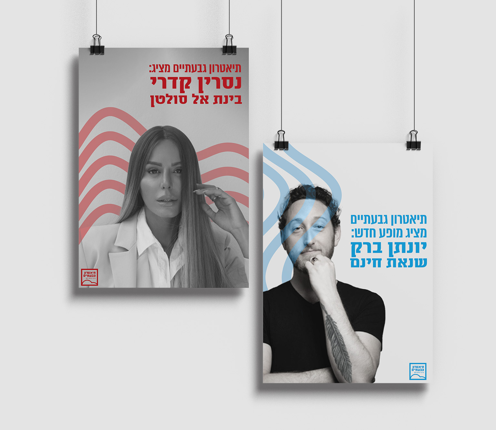
Givatayim Theatre
Branding suggestion for Givatayim theatre, based on an existing logo. The main goal of the project was to create a young, cohesive graphic language, that will speak to veteran theatergoers and newcomers alike.
The graphic elements are inspired by the Givatayim hills and the color palette is based on the Givatayim city logo.
This project was created during my studies and was co-designed with Lexi Adiel.
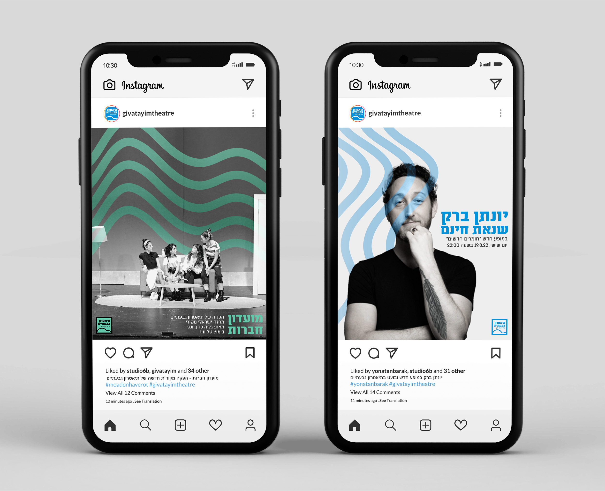
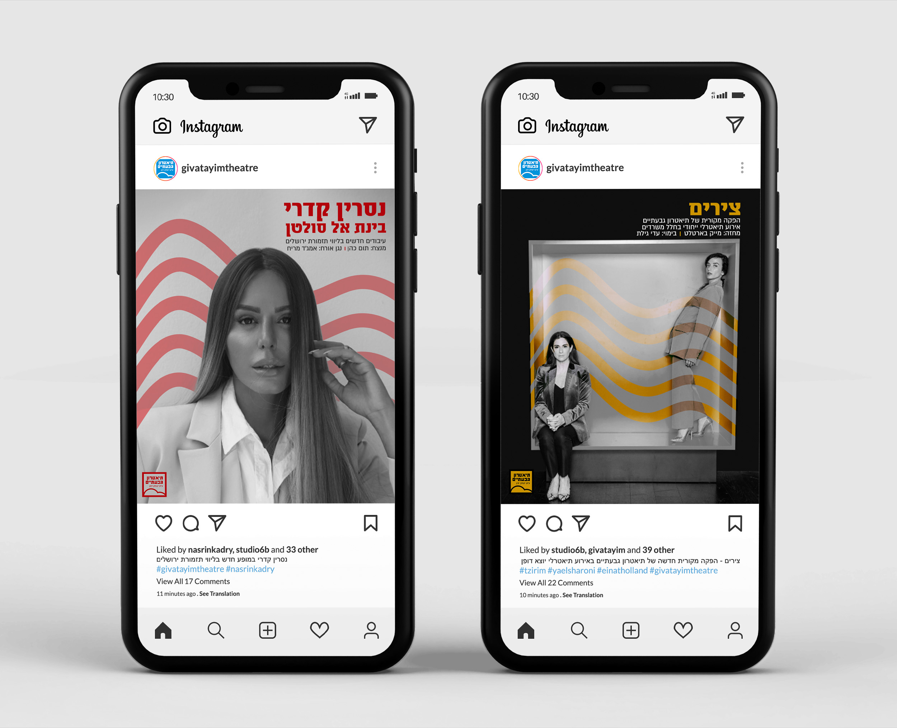
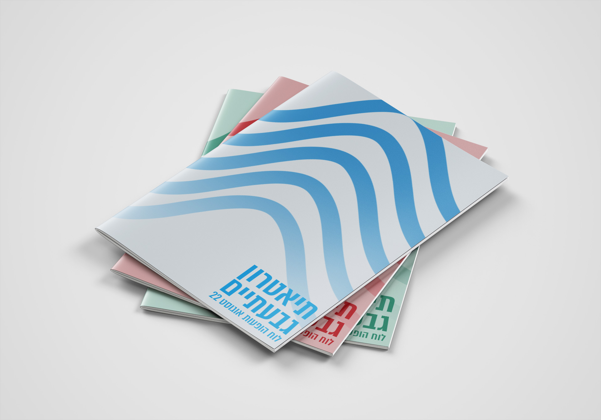
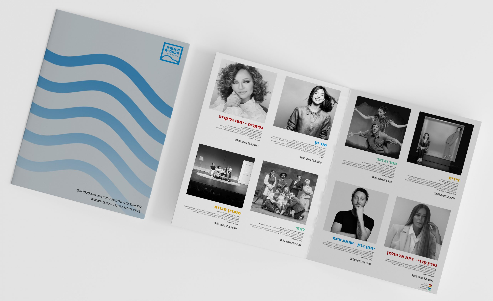
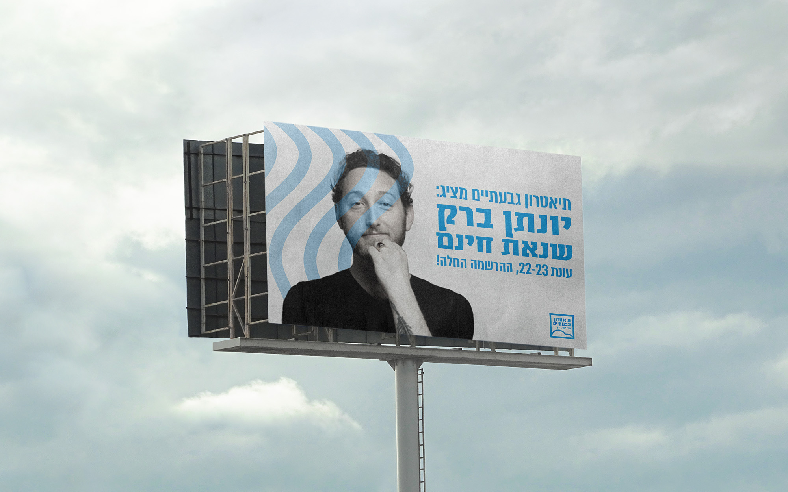
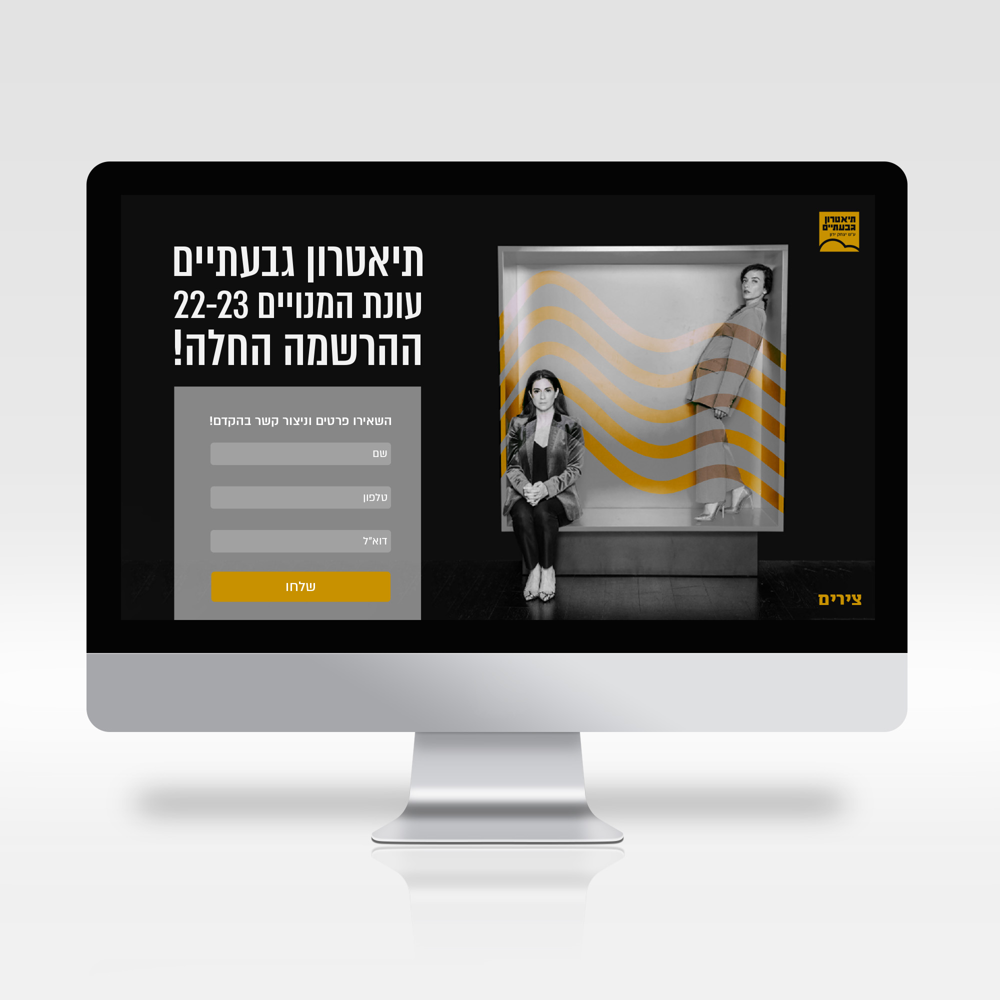
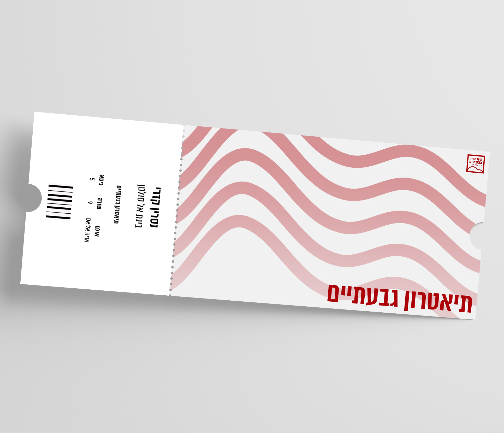
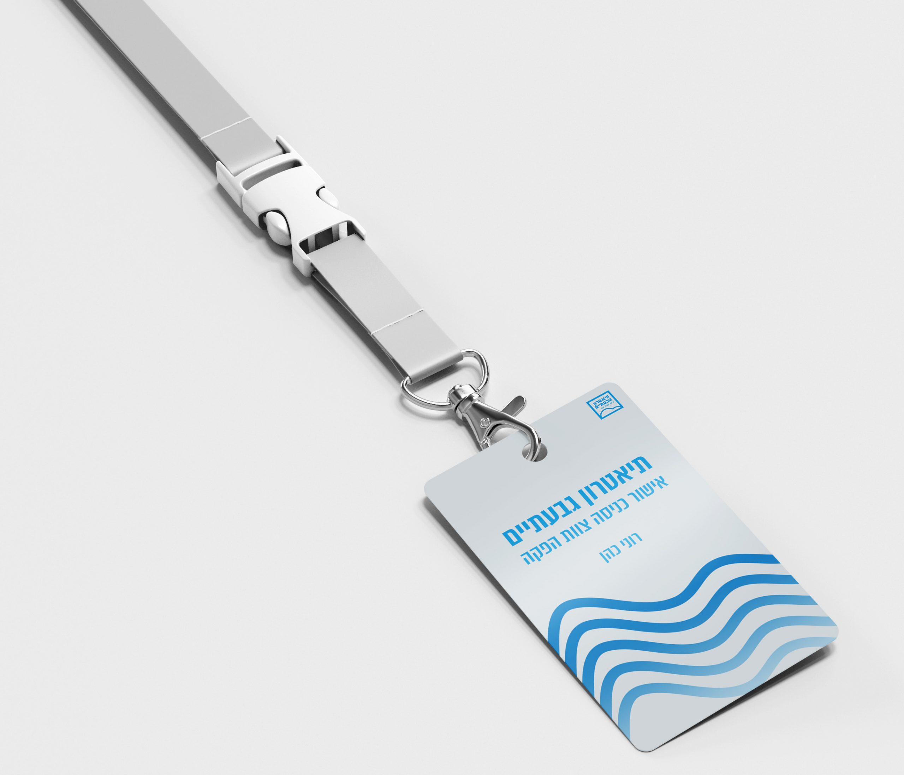
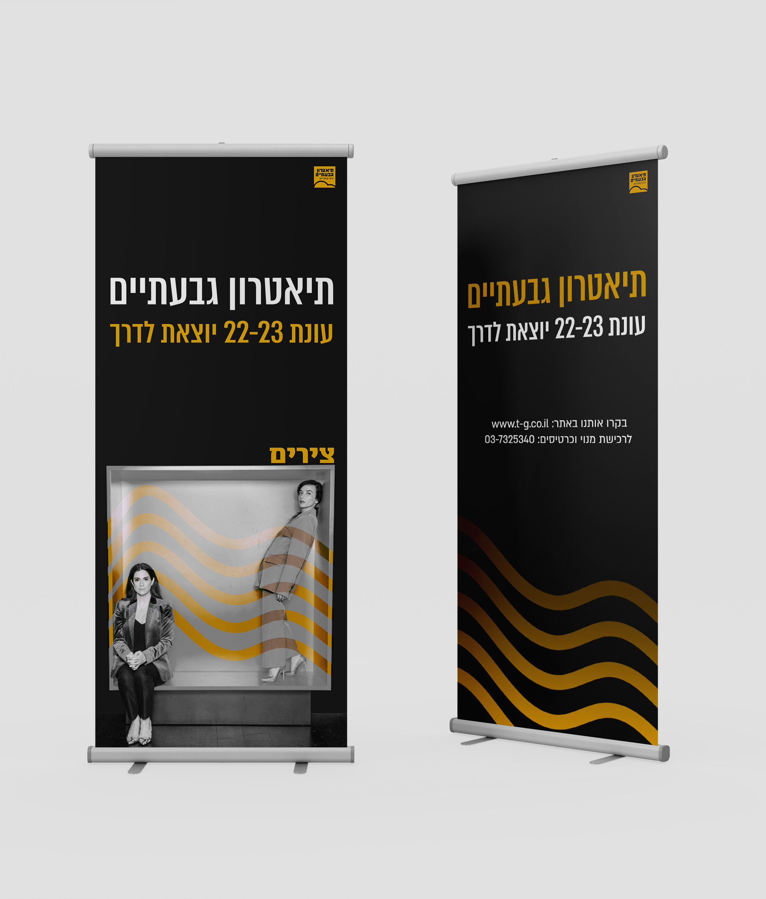
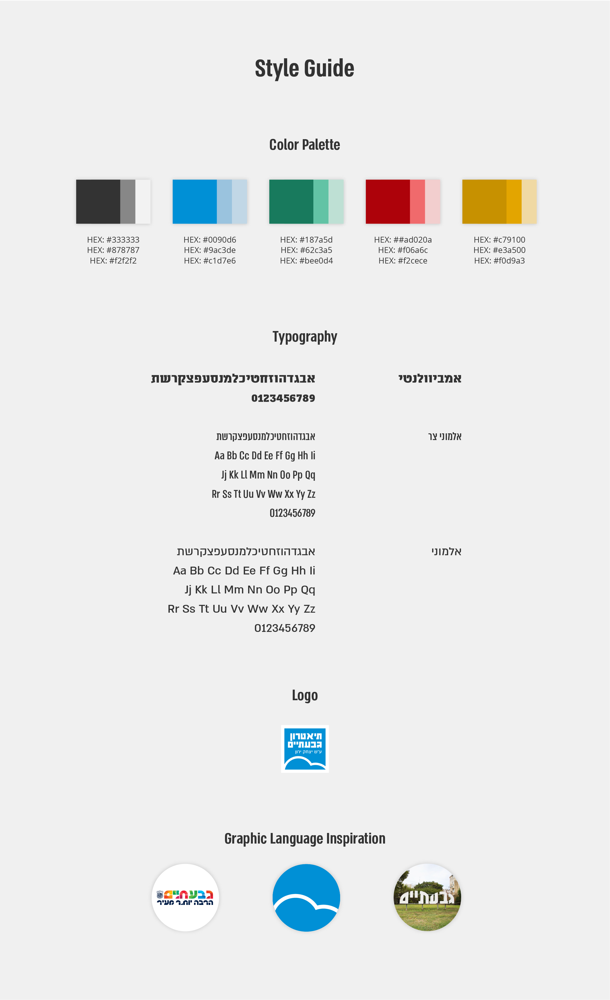